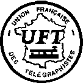

|  |
THE EUROPEAN CW ASSOCIATION
ON5ME-EuCW 160m Kontest
|
 |
Regeln des ON5ME-EuCW 160m Kontest
Unter der Schirmherrschaft der EuCW veranstaltet die UFT (UNION FRANCAISE DES
TELEGRAPHISTES) einen 160m Kontest zur Bandbelegung im "Top Band" vor.
Datum:
Jährlich am ersten Januarwochende, es sei denn 1. Januar fällt auf
einen Samstag oder Sonntag. In diesem Fall findet der Kontest am zweiten
Januarwochenende statt.
Zeiten:
Samstag, von 20h00 bis 23h00 UTC
Sonntag, von 04h00 bis 07h00 UTC
Frequenzen: 1810 bis 1840 kHz.
Betriebsart: CW.
Teilnehmer: Alle lizenzierten Funkamateure und Kurzwellenhörer.
Klassen:
A-C: EuCW Mitglieder,
Ausgangsleistungen A: 150W und mehr; B: 5-150W; C: 5W oder geringer;
D: Nichtmitglieder in EuCW,
Ausgangsleistung beliebig.
E: Kurzwellenhörer.
Austausch:
A-C: RST/Name/Club/mbr-nr,
D: RST/Name/NM,
E: Infos beider Stationen.
Punkte:
A-D: eigenes DXCC Land: 1 Pkt., eigener Kontinent: 2 Pkt., DX: 5 Pkt;
E: 2 Pkt. pro komplettem QSO.
A-F: 10 Pkt. für jede offizielle Klubstation eines EuCW-Klubs
Jede Station kann einmal pro Tag gewertet werden.
Multis: EuCW Clubs und Assoziierte Clubs ausserhalb EUs (siehe
www.eucw.org/eucw.html) pro Klub und Tag.
Punktberechnung: QSO Punkte x Multis
Logs: Datum, UTC, Rufzeichen, Infos, Punkte, Multiplikatorliste,
Deckblatt mit Klassenangabe, Stationsbeschreibung und
Erklärung, die Regeln eingehalten zu haben.
Digitale Logs: ASCII auf Diskette oder via E-Post.
Manager:
Ghislain BARBASON, 5 rue de l'Ecluse, F-02190 PIGNICOURT,
Email:..f6cel (at-symbol) orange.fr..
Einsendeschluss: 8. Februar
Gewinne:
Klasse A: 1. Platz Pokal, 2. Platz Trophäe, 3. Platz Trophäe
Klasse B: 1. Platz Pokal, 2. Platz Trophäe, 3. Platz Trophäe
Klasse C: 1. Platz Trophäe
Klasse D: 1. Platz Trophäe
Klasse E: 1. Platz Pokal
Beste YL: Pokal
ACHTUNG: SONDERSTATIONEN gehen nicht in die Wertung ein.
Infos: http://www.uft.net/
Quelle: F5NQL i.A. der UFT. (Aus dem Frz. von ik2rmz)
Englische Ausschreibung/Ergebnisse